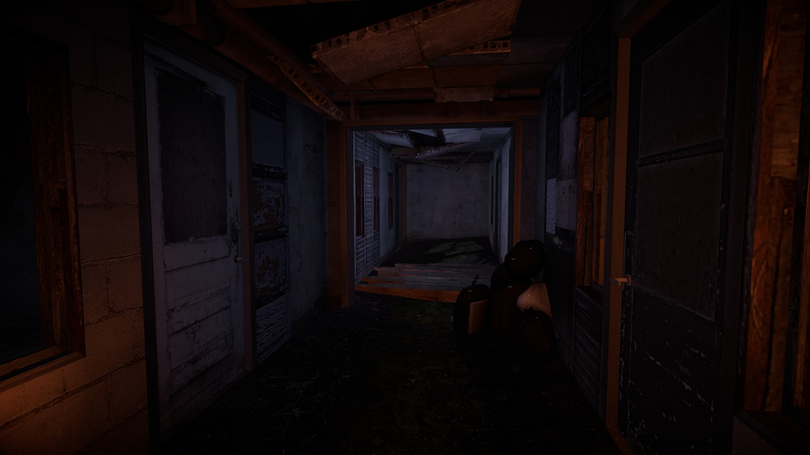
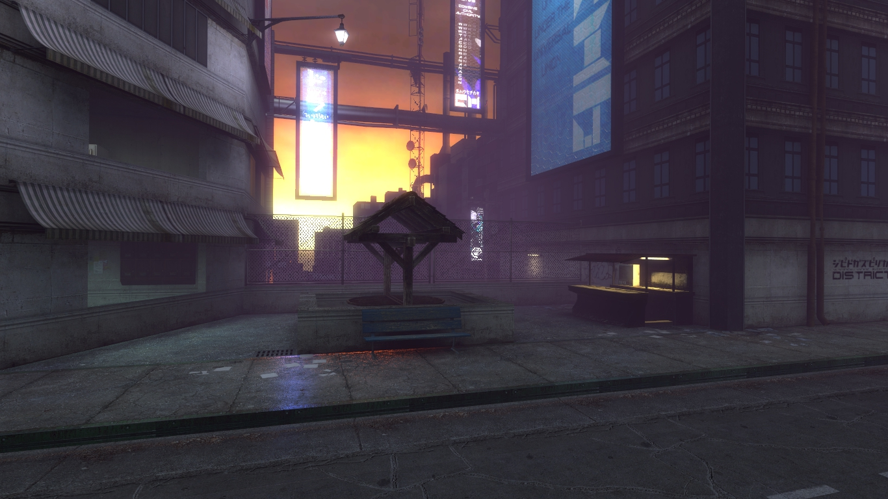

What does it mean to be human? How do we decide which path to take along the journey of our lives? On the streets of Velvet City, a wayward android scrounges for enough bitcoin to buy himself some lazy code. Around the corner, an SCorp enforcer takes down a Terminal Tom for peddling illegal code. The city is full of stories.... this is yours.
You sit alone at your desk and count the minutes. Five minutes before you need to get on the beat. The office is half empty today.
As you lean back in your chair and start to count the ceiling tiles, your trapper keeper chimes a developing news alert.
Your stomach flapjacks. Fear slowly starts to creep in.
',' your trapper keeper chimes. It's Nia. 'I heard the news. Are you alright?'
"Nia, stop listening," you say. Pesky A.I."I'm ok, Nia, thank you. What's the global feed saying?" you ask.
'0 hits' Nia replies.The neural link, AKA "the brain potato," is arguably the most important innovation of the 21st century. No longer is nature the gatekeeper to untapped potential. The potato allows users to access, store, and recall any data type instantaneously. Rich, poor, young, old… everyone has one these days. Most get the implant directly after birth.
You can’t help but wonder… Will you be safe?
"Time to begin work !" the trapper keeper chimes as the clock read 8am.
“Same stuff… different day,” you mutter to yourself. The last thing you want to do is spend all day writing full pieces. All you can think about is the event the Watchers are calling “The Crash.”You try to clear your mind of the news, opening applications and going through your daily routine to prepare for work.
Today you need to write an album review for the Screaming Valkyries latest, Null Dreams. There's the blog post, the copy, the images, an interview with Naoki Koda at 3, another piece a new jewlery app for Robo-Dogs. It's going to be a brutally busy day. Then you have a thought: maybe you should reach out to some contacts, see if you can learn more about the Crash?
Maybe Zephyr would know something? You suspect she's a pirate cyberframe user like you - a framer. Likes to talk conspiracy theories after a few Kirins.
Or what about Gabe? Gabe's a little more trustworthy. You've known him longer, and he's a bartender so he might have some decent intel.
5:00 p.m. Everyone usually clocks out at 4:45, but you prefer to do things by the book.4:45 p.m., technically clocking out on time, but not exactly aces on your quarterly. It seems like the world's going mad trying to figure out what happened. You decide to hit your local dive bar, the Grisly Grott0. Sort of a classy joint. They play music from long before the Reformatting.
After arriving, you get your usual, a cold glass of Kirin, then settle in at the bar. What a mess of a day, what with half the newsroom empty because of the Crash. Did they crash? Or someone they loved? You shudder. Gabe the bartender wasn’t as chatty as he usually was, instead just polishing the glasses. Then he leans in and says, “Think maybe I got something for you, Newsy."
"Newsy. Ha! A Newsy's only purpose is to write whatever SCorp tells them to. They never let me run my own leads." You find the term 'Newsy' repugnant. A misnomer."Sure thing, Gabe." Newsy was the term for anyone contracted by SCorp News to write for 'Tales from Velvet City,' a daily blog, and even if you had major doubts towards the authenticity of what you were writing, that was your job.
“Someone's been looking for you.” Gabe says as he walks a little closer. Bach's Prelude in C minor in the background.
“What can I say, I'm popular.” you say, not all that interested. Gabe reaches under the counter and produces a small storage unit with ornate design. It has the text #: ENCRYPTED displayed on a mini LED screen.
“Someone came by earlier. Strange looking one. Mangy beard, brown trench coat, yellow teeth... He said that if I saw you, I should give you this.” Gabe explained.
A phys drive? Why wouldn't they just send me a message through the potatoes? You reach over to take the drive. When you try to take it Gabe holds on to it and gives you a stern look.
“Seems a little dangerous, . No clue what’s on this drive, but the man who left it for you had a dangerous look about him."
You nod. "All good, Gabe. Aces.” You take the driver and finish your drink.
'Hurdy Gurdy Man' is playing on the juke as you walk out the door into the polluted dusk.
You can’t stop thinking about the Crash, and feel like you need to know more. You go to Westwood Park to try to relax, but the old, dying trees and tainted sunlight give you no comfort. People mill by at a listless pace, gas masks over their faces.
Why did all those people crash? Is it going to happen again, or to you? You feel sick, uneasy, like you have to get to the bottom of this. One of your old chummers from academy might know. You heard he’d got a pretty nice gig with SCorp as an ICE controller. The park is now deserted, and seems sad, haunted. You stomp at a rat that scurries by your feet.
Ehh, it’s worth a shot. You call up Zephyr Dionikes on your vidphone.
“, what’s going down?”
“Hey, Zephyr. You know anything about the Crash? I can’t stop thinking about it,” you say.
Zephyr stays silent for a few moments. “, don’t look too close."
That’s my advice. Go to your job tomorrow, try to be happy, find a date this weekend.”
“Zeph, tell me. I need to know. What happened?”
He takes a moment to rub his furrowed brow. ENCRYPTED flashes onto the screen. “Fine, you asked for it. Look into SCorp's repositories for the latest firmware update.” The line disconnects... He looked really concerned. It’s been a long day. Whatever Zeph pointed me towards, it’s probably not good. Time to get back home. As you walk, you see someone down and out slumped next to a tree.
You try and focus on anything EXCEPT for the tip you just learned, but you can’t seem to push it out of your mind.This is the real story, you tell yourself, not some silly tale. You're going to get to the bottom of this.
“DING FLOOR 200!” the mag lift announces.
You step into the desolate hall of your apartment floor and make your way to door 200e2. The room is nearly empty save a bed, a nightstand, and a vintage Felix the Cat alarm clock from the '90s. The techno greasy glow of the magenta city scape illuminates cold room. You take a moment and finally decide that you need to know what is being hidden from the public about “The Crash”.
You set the brain potato to twice stuffed and frame jack into the SCorp repositories. You execute a bit of custom script and find something unusual. An error in the commit log for the latest neural link software update. There are several lines that are redacted. You dig deeper into the problem, only to discover the horrifying truth…
A bug. A nasty one. And even worse, SCorp knew it was going to happen, and they did nothing to stop it.
This could be the end of SCorp if anyone finds out…
"You have a new message, ," chimes your Trapper Keeper.
From an anonymous Journalist… “You have the information I need. Help me change the world.”
You decide not to send the information, you have no idea who this person is, or even if they can be trusted.
The mag lift dings open and a group of heavily armed SCorp enforcers step out.
It seems as though you can't escape the wrath of SCorp. You make a mad dash and catch the mag lift at the opposite side of the room. They chase you out of the building and through a network of alleys. You try to evade the omnipresence of wires devouring the cityscape. The tangle you up, slowing you down. The SCorp enforcers are hot on your tail.
As you extricate yourself from the electric brine with your laser blade, and begin to run again a stranger pulls you in from a side door of a store front.
"Oh no... SCorp has me now" you think.
You and the journalist flee into the nefarious neon underground, away from harm above, for now...
You create an encrypted data packet to send to your new contact. This wasn’t an easy choice, but the world deserves to know the truth. The moment the information is sent a security alarm screams into your ear, “Security channel compromised”.
“Oh shit” you whisper…
Any moment SCorp goons could break into your apartment, grab you, and lock you away never to be heard from again.
Trapper keeper in hand your make a mad dash for the door. As you step into the hallway you see a large shadowy figure at the end.
SCorp works quick. You make a mad dash for the mag lift and hit the button for the basement. The shadowy figure sprints to the lift door as it close inches before his face.
As the lift races to the basement you start to panic… Where can you go? Who can you trust? You send you journalist contact a message “Help, SCorp is on my tail”
“Ditch the heat and meet me in The Velvet Underground. Block E, 5th avenue access hatch. Pass code is xeon”
In the early 21st century Velvet City was a major port located on a bustling waterway. By 2099 the river had been diverted to serve other SCorp interests. The dried up canals became The Velvet Underground. A haven for people looking to get lost.
You arrive at Block E, 5th avenue access hatch and key in the code “xeon”.
You step into the small dimly lit room.
“We need to talk” you say to the journalist.
“Then talk” he replies.
You two discuss the need for a New World Order. You both agree that SCorp intentionally released faulty software and needs to be held accountable. Yet, you fear that the panic incited could cause global pandemonium. While the journalist seems intent on setting the world ablaze… you still have pause. Will you help the journalist expose the truth?
Or maybe it’s not too late to make nice with SCorp.
Something perturbs you. You realize you have seen this journalist before. It seems as if you crossed paths at a local seafood restaurant. He was in a bathroom stall and abruptly left with a viscous terrier under his arm while you were washing your hands. You decide this "Journalist" can't be trusted. You need to turn him in.
The Journalist's lack of hygiene offended you immensely. But what happened after that was much worse. You witnessed him meticulously licking his fingers while eating a plate of shrimp. The act flayed all your senses. So you made the decision to turn him in.
Several android enforcers enter the bar and take seats all around you. You order a drink for the one sitting next to you, saying nothing.
"You did the right thing," they say.
"I figure the evil I know is better than the one I don't," you say.
You spend a few more hours at the bar, then head back home. You turn on your favorite reality TV show, "Climbing for Dollars."
It doesn't give you much satisfaction. You snap off the TV, climb in to bed, and think about the madness you discovered today.
A few days later you awake at the Watchers pad to the sound of helicopters overhead. This is bad. Really bad. SCorp is on to you. They must have found out it was the Watchers that leaked the info. You check the Watcher newsfeed.
It’s fight or flight time. Live or die. You climb out the window onto the rickety fire escape and shimmy your way down to your ‘85 Wizzer parked on the street below.
Finally you get it started, and take off at speed. Your heart is pounding; you’ve never felt like this before. Is it the end?
All of the sudden, two black SUVs pull up and block the intersection. Panic races through your body. You turn the bike around and attempt to go the other way, but 4 other SUVs pull up to block the opposite side of the street. The jig is up. You’re geeked.
You dismount your bike, take off your helmet, and stare down your oppressors. Androids in black suits begin piling out of the vehicles. How do so many fit inside?
“People deserve to know!” you shout, “We’re awake now!”
They form up, surrounding you. There must be 100… They stand alert, silent.
Was it worth it? This is what humanity needed to expose SCorp, you tell yourself. Millions of brains wiped by a blank master copy in the blink of an eye. For what? The potatoes made life better, but now...
Whatever happens to you, you feel like the world is entering a strange, new age, and that you and the other Watchers were the ushers to this great transformation.
